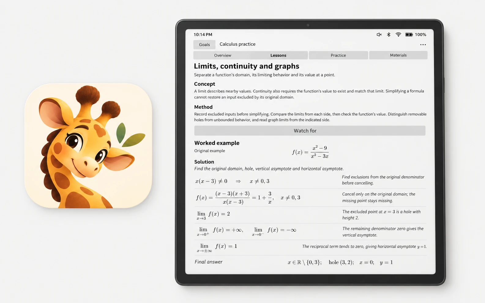

Protect the original thinking
Keep AI replies separate from the learner’s ink, so help adds context without replacing their work.
Personal project · Native Android prototype
A pen-first notebook for BOOX and Android tablets, connecting handwritten thinking, study materials and optional AI assistance.

Switching between handwritten notes, explanations and practice can break a study session’s flow. NoteCrafted explores a single notebook where learners keep their own working, ask for help deliberately and return to what they tried.
A freeform Think canvas supports pressure-aware ink, selection, erasing, undo and redo. A structured Tutor brings together local calculus lessons, practice, saved attempts and assistance history. Goal-specific storage preserves working between sessions.
Keep AI replies separate from the learner’s ink, so help adds context without replacing their work.
Local lessons and deterministic practice work without an AI request; assistance is an explicit connection.
Record attempts and help used. Numeric checks cover typed answers; they do not assess handwritten reasoning or certify mastery.
The earlier NoteCrafted web demo explored an AI tutor. The tablet prototype, developed as PLIA, shifted the focus toward handwriting and direct interaction. Tools such as NotebookLM helped sharpen that design direction: how could AI support the way someone chooses to take notes?
The public v0.1.23 record includes installation and offline-lesson checks on the device. It is a working prototype, not a production release; the page does not establish the latest installed UI or measured learning gains.
Flashcards, adaptive review and a richer note-to-practice loop remain proposed work. Further validation needs real-device usability checks and independent learning measures.
This recorded web concept preserves the project’s first phase; it is not the Android interface.
Open on YouTube ↗Explore the implementation, research rationale, development history and known limitations.